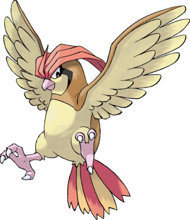

Roucoups est un puissant volatile qui peut repérer des proies à plusieurs kilomètres de son nid. Il a une vision extraordinaire, ce qui l'aide à repérer ses proies préférées, comme les Magicarpe ou les Noeunoeuf. Dans l'animé, il s'attaque aux Chenipan. Un Roucoups peut étendre son territoire jusqu'à 60 kilomètres à la ronde. Son nid est généralement au centre de son territoire. Il survole tous les jours son territoire à la recherche de nourriture ou d'intrus